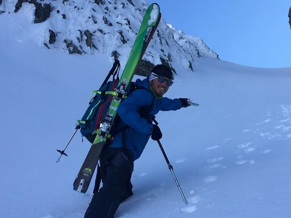

Janek Wojdyło – strona domowa
Od początku dnia minęło :
Kim jestem
Hej! Mam 34 lata od 12 lat pracuje sezonowo jako instruktor narciarstwa i snowboardu. Ostatnią zimę spędziłem w Białce Tatrzańskiej w szkole narciarskiej „STOK”.
Latem gram w tenisa i pracuje w firmie związanej z ruchem turystycznym w Krakowie.